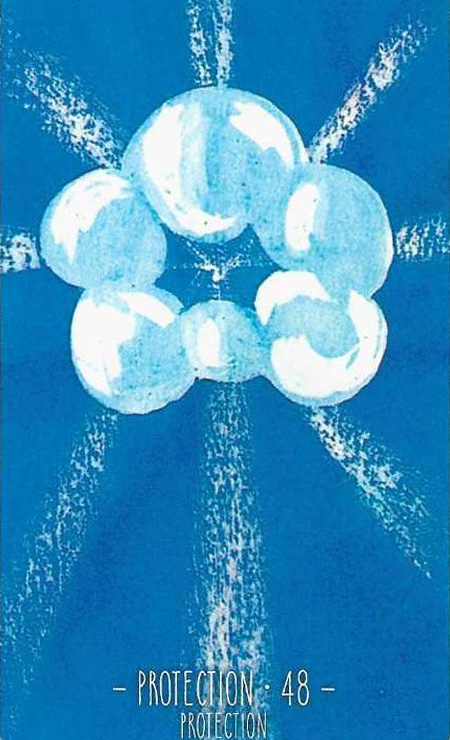

48
보호
Protection긍정

그림 읽기
파란 하늘에 도넛 모양의 하얀 구름, 흰빛이 사방으로 퍼집니다. 신의 은총이 햇살처럼 내리쬐는 듯한 이미지입니다.
보호방어행운신의 은총은혜로움좋은 직감
핵심 내용
- 보호·방어·행운·보살핌·도움·좋은 직감·신의 가호
- 나를 지켜주고 보호해주는 든든한 인연
- 안정적인 수입과 주변의 도움, 인복
- 좋은 소식, 운이 열려 있음, 좋은 운 때, 하늘이 도와줌
- 비상한 통찰력, 창의력, 기발한 아이디어, 직관이 발휘됨
주요 메시지
직관력과 상승 — 신의 은총·직관·은혜, 투시의 의미
중화와 보호 — 부정 카드가 나와도 그 기운을 중화시키는 강력한 보호
실생활 적용
치유와 건강 — 노력하던 치료가 결실을 맺는 시점
강력한 보호자·지지자의 등장, 안정적 수입과 운의 전환
학습 노트
직관적 통찰력과 창의력이 빛을 발하는 시기이니, 현재의 직관을 신뢰하라는 조언.
조합 메모
48번+50번 = 보호와 안전에 중점을 둔 환경에서 장애물 극복

48번+26번 = 재정적 보호가 필요한 시기

48번+2번 = 보호와 여성적 사고의 조화